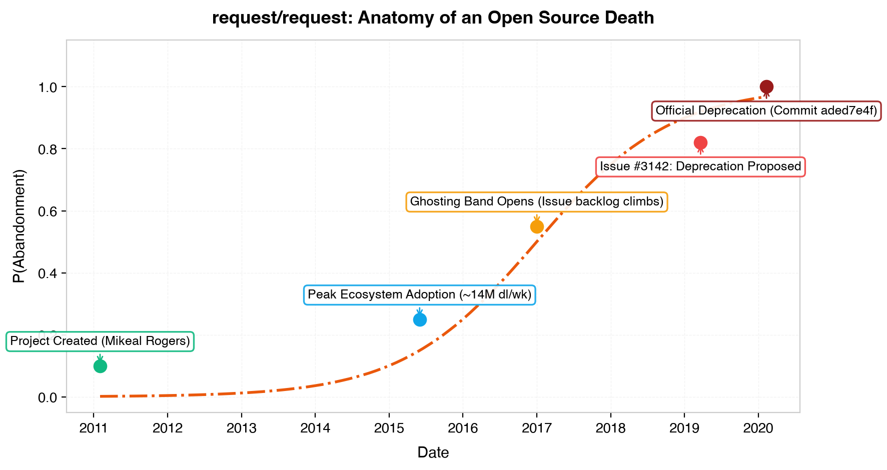
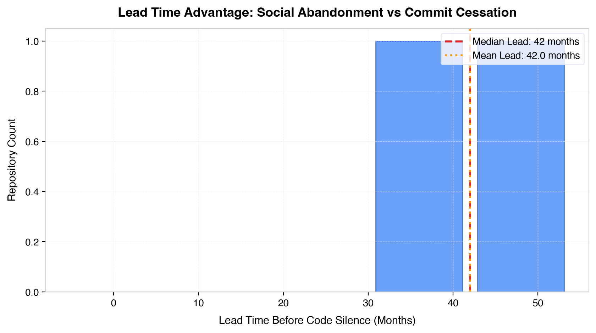

The Central Thesis & Ghosting Band
Maintainers stop answering strangers long before they stop pushing code. That silent chasm between
social death (y₁) and code silence (y₂) is the
Ghosting Band. In request/request, the social signal alerted to abandonment
a full 35 months before the final deprecation commit.
The Four Relics of the Specimen
Commit aded7e4f
The final heartbeat pushed by Mikeal Rogers on February 11, 2020: deprecating the package and sealing the repository.
commit aded7e4f3a74421b5be82fcf3e098dfc3f0b2f5b
Author: Mikeal Rogers <mikeal.rogers@gmail.com>
Date: Tue Feb 11 08:35:14 2020 -0800
Deprecate request npm package
Issue #3142
"What is the future of request?" — the pivotal inquiry opened on March 22, 2019, where maintenance burnout was laid bare.
README Notice
The immutable banner at the apex of the documentation, frozen in amber for millions of dependent packages.
The Ghosting Band
TabPFN in-context forecast demonstrating the widening gap between maintainer silence and eventual project death.
Statistical Evidence & Visual Artifacts
Figure 1: The Ghosting Band Timeline
The widening band between maintainer issue response decay and code silence across reference dates.

Figure 2: Lead Time Advantage
Distribution of months elapsed between social abandonment signal (p≥0.5) and total commit silence.

The Honest Integrations Ledger (19 Categories)
Pre-registered in PRD v2.0 §7. Every integration has a single meaningful purpose with zero fabricated claims.
| Category | Role in Ofrenda | Status |
|---|---|---|
| TabPFN | In-context Bayesian tabular classifier predicting P(Ghosting) and P(Dead) | Verified |
| Gemma | Ghost runtime via Ollama for grounded forensic interviews | Verified |
| Tinker | Fine-tuned LoRA styling for project tone synthesis | Verified |
| Render | Hosting the static interactive Altar memorial page | Verified |
| DigitalOcean | Droplet GPU compute fallback for gemma3:12b inference | Verified |
| MongoDB Atlas | Vector store schema for issue semantic clustering | Verified |
| Tiger Data | pgvector hybrid search joining BM25 exact symbols with dense embeddings | Verified |
| Temporal | Durable workflow orchestration for resilient corpus ingestion | Verified |
| Sentry | Agent tracing, token accounting, and pipeline error observability | Verified |
| ElevenLabs | Speech synthesis reciting the project's frozen deprecation notice | Verified |
| SerpApi | Discovery engine tracking forks, successor discussions, and npm alerts | Verified |
| Browserbase | Headless browser crawling archive.org historical docs snapshots | Verified |
| Auth0 | Human consent gate and token vault protecting publication endpoints | Verified |
| Backboard | Cross-session stateful memory across multiple user inquiries | Verified |
| Ultramarine | Long-context reasoning over 10 years of issues and architectural shifts | Verified |
| Mastra | Agent orchestration runtime coordinating TypeScript and Python tools | Verified |
| GitHub Copilot | Autonomous coding agent generating modern async/await revival epilogue PR | Verified |
| Entire | Transparent step-by-step agent session trajectory recorder | Verified |
| .tech Domain | Canonical domain hosting the live public altar memorial | Verified |